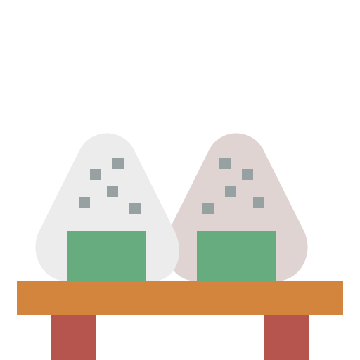

Discover & Taste
What is it?
Japanese cuisine (和食 washoku) is based on rice with miso soup and other dishes; there is an emphasis on seasonal ingredients. Side dishes often consist of fish, pickled vegetables, and vegetables cooked in broth. Seafood is common, often grilled, but also served raw as sashimi or in sushi. Seafood and vegetables are also deep-fried in a light batter, as tempura. Apart from rice, staples include noodles, such as soba and udon. Japan also has many simmered dishes such as fish products in broth called oden, or beef in sukiyaki and nikujaga.
Dishes
Find dishes that suit your taste by exploring this list!